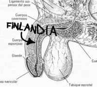

De: La Frikipedia, la enciclopedia extremadamente seria.
De: La Frikipedia, la enciclopedia extremadamente seria. De: La Frikipedia, la enciclopedia extremadamente seria.
| De la serie Países del planeta tierra: | |||||
| Semen Trasalvata / Fiinnenläändäjä | |||||
|---|---|---|---|---|---|
| |||||
| Lema: Hääcen friomen.(en voces guturales) | |||||
| Himno: ¡No, por ahora no!en voces guturales (en voces guturales)
| |||||
| 
| |||||
| Capital | La Casa de Santa Claus | ||||
| Mayor ciudad | Heiniken | ||||
| Lenguas oficiales | Finés por el celular, también hablan Nokia | ||||
| Gobierno | Paletas Heladas | ||||
| Jefe de Estado | Pato Donald | ||||
| Área | Norte, muy arriba | ||||
| Población | Hielocos | ||||
| Moneda | Laihos pero no importa, en la siguiente era glaciar desaparece | ||||
| Zona horaria | 6 meses de día, 6 meses de noche y el resto del año no pasa nada | ||||
| Dominio Internet | .fn | ||||
| Código telefónico | 45453566143561571OMG!!!7474
| ||||
| ¿COMO? | |||||
Finlandia es mejor conocida como "El País al lado del pais al lado del pais arriba de Inglaterra" (creo). Su nombre viene del Guaraní y significa "Lugar donde habitan las especies de climas fríos". Su himno es death metal y esta en finés combinado con idioma Laiho, al igual que su constitución. Aunque se diga lo contrario este país no pertenece al liga vikinga, no hay constancia del paso de Thor ni de ningún Dios Vikingo por las aduanas. No se sabe de dónde procede la lengua finesa, lo más probable y la teoría que apuntan hasta los mismos finlandeses es que vino un marciano y dio unas clases básicas sobre el idioma, extraterrestre combinado con ruso, inglés, alemán, noruego, sueco y todos los idiomas del mundo, incluso los que están por venir, crearon el idioma finés (conektin piipil). Es un estado de muy buen estar, no hay corrupción por lo tanto no hay Julián Muñigo.
No se sabe mucho más de Finlandia, pero se cree que en este país se inventaron las matas gueras y las tortillas (aunque México quiera atribuirselas). Se cree también que toda la selección brasileña nació en Finlandia. Es tambien uno de los lugares de nacimiento de Pipi Calzaslargas.
Un día en Finlandia queda descrito de la siguiente manera:
Nota los niños: Van 4 horas a la escuela y luego juegan habbo hotelli /(habbo hotel) hasta que aparesca el lobo y los mate a todos Al día siguente se despiertan todos los finlandeses con resaca, pero a trabajar rapidísimo y puntuales, que son gente muy seria, no como en Es...
El finlandes promedio viene de finlandia y toca en Children Of Bodom o The Rasmus. Puede ser gûero, rubio o tener el pelo amarillo. No mide mas de 0, 2 pies y suele vivir en finlandia si no migro a italia, europa, buenos aires, malos aires (aldea de pedos),mis sueños, los de chuck, mi casa, la de mata chabban (que es tu casa), la casa 5, E304 o a tu mente deprabada mientras ves pornografia(en donde vive la mayoria de finlandecés...con acento en la e...buajaja)
Son gente educada, fina y bien hablada cuando les SALE DE POR AHI...sino están todo el día diciendo palabrotas (los chicos) y cotilleando (las chicas)pero graciasdió allá las marujas no están en televisión.
Los chicos finlandeses como ya anoté antes además de ser rubios y tener el pelo amarillo pollo, ojos azules o verdes, nunca negros o castaños sino estaríamos hablando de una falsificación barata, si acaso rojos (por la bebida, algo usual). Los chicos que tienen que ir obligados al servicio militar o limpiar el culo a los viejos (yo eligiría lo militar xD)al cumplir los diesiosho (tienen miedo de que venga el oso marrón peludo).
Las chicas de allá no son nada sociables (es que no he tenido mucha suerte por allá con ellas xD).
Mucho frío, pá cagarse en invierno. hace tanto frío en invierno que hasta los hombres llevan pantys (que ya empiezas a dudar de tu sexualidad) para proteger del frío, sus partes ´´nobles´´, pero que luego se las machacan contra la nieve después de la sauna. A veces piensas : aah! pero si tampoco creo que haga mucho frío, yo con un suéter y zapatillas me las arreglo, cuando llegas a quitarte las zapatillas te salen los pies sin dedos. Lo mejor es comer mucho para estar como el gordo cabrón de papa noel es decir como una foca, asi que a alimentarse, cómo dice tu abuela, tu madre, tu padre .... y Yo!
En verano suavecito que es cuando todo finlandés muestra su cuerpo sersy blankusko al sol y ver cómo se le cambia el color de blanco a rojo es todo un fenómeno, suele llover (casi todos los días) y también caen relámpagos, que los lanza Zeus, el dios del Olimpo (por el culo te la hinco XD).
Más arriba todavía, en Laponia vive el Hijo puta Santa Claus allá dónde los reyes de oriente no llegan, por que sino le daban de ostiaz por gordo cabrón, en verano hace sol las 24h y invierno hay oscuridad las 24h, lo que pasa en primavera y otoño no se sabe, por que en esas fechas no hay turismo ni vida, también existe un fenómeno atmosférico, llamada aurora bolear, lo más parecido a una discoteca al aire libre.
En otoño se caen las hojas por que lo digo YO (...y la madre naturaleza...)
La mejor del mundo entero global intergaláctica. Vamos que pá cagarse también. Algunos dicen que es una caca, es normal, todas las escuelas son unas bolas de mierda. Pero aquí no existe el fracaso escolar, un fracaso escolar sería no poder matricularse en la universidad, no se sabe nada de repetir curso, por eso he tenido que migrar a Finlandia con los pájaros y poner las cosas un poco en orden. También se han oído rumores de que van a dejar que los alumnos elijan lo que quieren estudiar. Sí, sí que si quieren pasarse las clases estudiando pr0n la mejor manera de mandar mensajitos podrán hacerlo.
La seguridad en las calles es alta y no me refiero a que hayan polis por todos los lados sino que en Finlandia usan una táctica muy buena : Si no hay gente en la calle, pá que coño necesitamos polis?
Pero eso sí existe lo que se suele llamar patrulla vecinal y que no dudan en telefonear a la poli (que son unos hijosdeputacreidoscabrones,nomedenuncien:))
Aunque te puedes encontrar en problemas con:
Soy pobre por lo tanto no voy a finlandia, y si voy, es para vivir del dinero de los demás, si tú también eres pobre llevate varios Tapervare, comida en conserva y mucho tabaco, la cajetilla más barata sale 4e allá, hasta los Mojinos Escozios dejarían de fumá en finlandia. Imagínate España
pero el doble de caro, pero claro, allí los ijo putas cobran el doble... aquí ni se cobra. Tienen una economía muy indrustrializada, como el heavy metal de Rammstein. Por ahora es el único país junto con suecia y noruega que tiene dinero, lo corregiré si viene necesario, es decir cuando ya no exista Finlandia.
La seguridad sosiá es supermegafashionhiper buena, allá no hay pobres, hay gente de poco dinero como yo pero que tienen pan para meterse en la boca cada día y de comprarme Ipods para la familia, y aver quien coño duerme en la calle a -20 grados o más digo menos... o.O ?
Si te piden dinero en la calle, fíjate bien, que bien pintadas tienen las uñas y que bonita chaqueta que tienen... y díle: DAME TU AMÍ, CABRÓN !
Si tu vives en el campo vives de lujo, no te preucupes de los vecinos, que si acaso la única visita que tengas en tu casa sea nada más que la de un oso peludo y marrón. si ves a un oso lo mejor que puedes hacer es montarte una orquesta de batería si quieres que se aleje de tu casa y te encuentras DENTRO de tu casa, si te encuentras FUERA hazte el muerto y no corras, si corres ya no tendrás que actúar.
Si vives en la ciudad es otro cantar.Lo mejor es vivir alejado de la gente al lado de un río, asando salchichas, bebiendo cerveza, pescando en el lago con una rubia y un Nokia, sueño de todo finlandés.
Me llamo Aapo y vivo en Finlandia Que es un país muy frió Aquí va mi historia
Me levanto a las 5:00am Me baño a las 5:05 Am En el sauna y en la ducha
A las 6:00 salgo desnudo a la calle Me congelo a las 10:00 me descongelo Salgo a trabajar como Mod en habbo hotel Cruzo la calle y miro que no hallas lobos
Vuelvo de trabajar a las 00:00 Entro a mi casa como todo lo que halla quedado Luego miro tv y juego pc Mientras mi suegro lucha con lobos
a las 00:30 vuelvo al sauna Veo a mi suegra buackala
Sere muy buen padre voy a la pieza de mi hijo juega habbo.com va a salir como el hijo Voy a la pieza de mi hija veo fotos de justin bieber desnudo BUACKALA
Voy a darle de comer a los lobos. Llamo una ambulancia para mi suegro Subo la temperatura de sauna a 300º Sale mi suegra.... Desifecto limpio todo y me meto
A las 00:30 salgo Leo hasta las 1:00 am el Kalevala A las Luego la misma rutina de siempre Viva FInNLANDIA
Su mafia se divide en dos y son las mas friolentas del mundo (No porque maten gente,si no porque se cagan de frió) ella son Las de Habbo y la de hielo aquí paso a dividir
La habbo mafia se trata de robar cuentas y blanquear habbo créditos para vender a todo el mundo por eso se divide en lo siguiente.Los niños de edad temprana roban habbo cuentas para los ancianos (capos mafias) y ademas de dársela a los ancianos se la pasan al siguiente paso los adolescentes,estos vacían las cuentas de habbo dejando a los staff de 1.000.000.000 de créditos en 0 y pasársela a los ancianos (Los adultos no trabajan ya que son moderadores o diseñadores gráficos y en caso de no entrar pedofilos pero bueno ellos acosan a los habbos robadados y los mods son comiados así que no importa xd.....Una vez que pasa a los ancianos ellos son los que venden la cuenta sacando sus nombres extraños a latinos o Gringones Anglosajón osea nombres como:Jhoan3000 o josefitocaradepito3000
y La de hielo se trata de picar hielo cuya mafia es de la minoría (Solamente papa noel y duendes).Para hacer esto van a la zona mas al norte de Finlandia y pican hielo luego lo meten en bolsas que dicen polo norte y la esconde afuera (en Finlandia no existen los congeladores ni freezers pues todo el país es uno) y cuando llega la navidad la esconden en bolsas las cuales las exportan escondidas a todo el mundo (especialmente a coca-cola)
  Imperios de Europa Imperios de Europa
|
|---|
| Eslovaquia |
Autor(es):